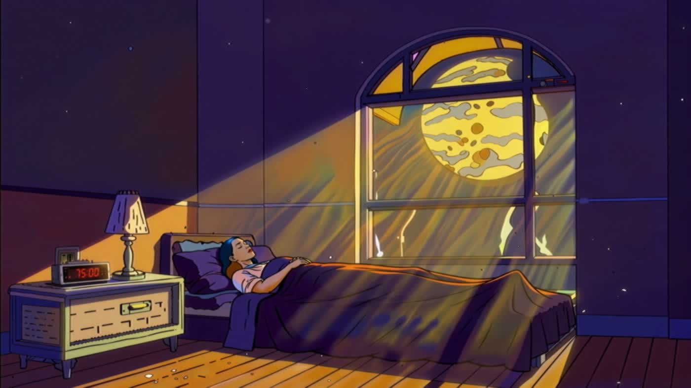
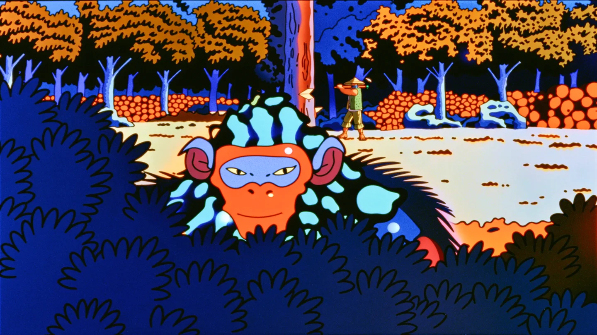
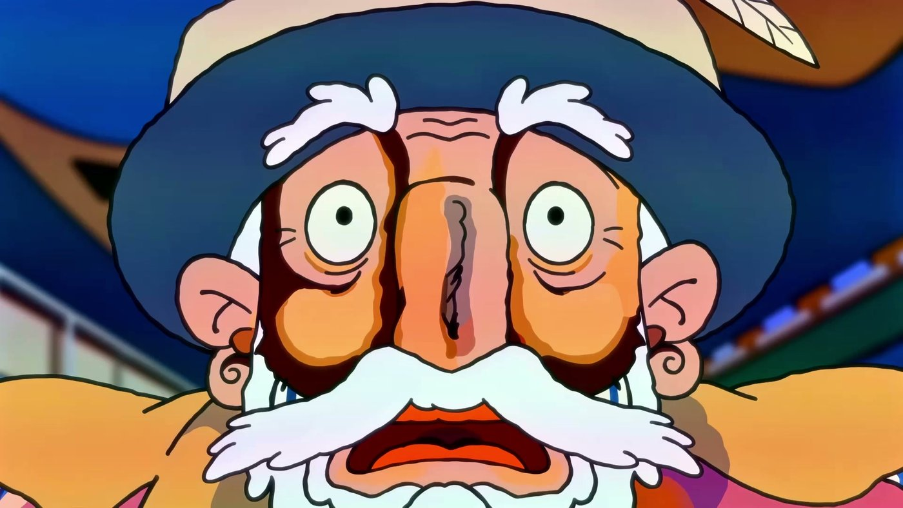
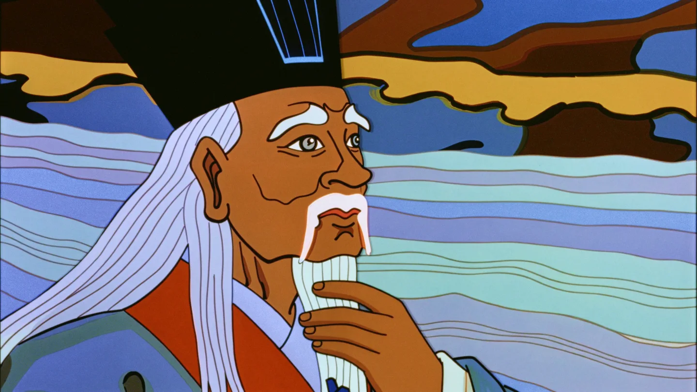

<div class="dream-layout">
<div class="screen dream-player" id="featured-screen"><button class="play video-surface-toggle" id="featured-play" type="button" aria-label="Play What If You Could Dream Any Dream You Wanted?"><span class="video-toggle-icon" aria-hidden="true">▶</span></button>
<div class="film-stills-controls" id="film-stills-controls" role="group" aria-label="Film stills" hidden>
  <button type="button" id="film-still-prev" aria-label="Previous still" aria-keyshortcuts="ArrowLeft">←</button>
  <span id="film-still-count" role="status"></span>
  <button type="button" id="film-still-next" aria-label="Next still" aria-keyshortcuts="ArrowRight">→</button>
</div></div>
<aside class="dream-meta" aria-live="polite"><h3 id="featured-title">What If You Could Dream Any Dream You Wanted?</h3><p class="dream-sub" id="featured-status">2026 · 2:05 · Animated short</p><p class="dream-credit" id="featured-credit">Jas Black, 204 production, AWO words</p><p id="featured-description">What if you could dream any dream you wanted? An animated world built around Alan Watts' recorded voice.</p><a class="dream-yt" id="featured-youtube" href="https://www.youtube.com/watch?v=M585jPAbVKw" target="_blank" rel="noopener noreferrer">Watch on YouTube ↗</a></aside>
</div>
<div class="dream-timeline youtube-timeline" id="film-timeline" aria-label="Film timeline">
<ol class="tl-frames" id="timeline-frames"></ol>
<div class="film-waveform">
  
  <input id="film-waveform-seek" type="range" min="0" max="125" value="0" step="1" aria-label="Choose a moment in the recorded talk">
</div>
<div class="timeline-caption"><span>Recorded talk · Select a moment</span><span id="timeline-time">2:05 · YouTube</span></div>
</div>
<div class="more-films-label">More from the collaboration</div>
<div class="film-tabs" role="group" aria-label="Choose an Alan Watts piece">
<button class="film-tab" aria-pressed="true" data-piece="dream"><span><strong>Dream Any Dream</strong><small>Animated short</small></span></button>
<button class="film-tab" aria-pressed="false" data-piece="satori"><span><strong>Satori</strong><small>4 selected stills</small></span></button>
<button class="film-tab" aria-pressed="false" data-piece="maybe"><span><strong>The Great Maybe</strong><small>Animated short</small></span></button>
<button class="film-tab" aria-pressed="false" data-piece="confucius"><span><strong>Confucius</strong><small>4 selected stills</small></span></button>
</div>
